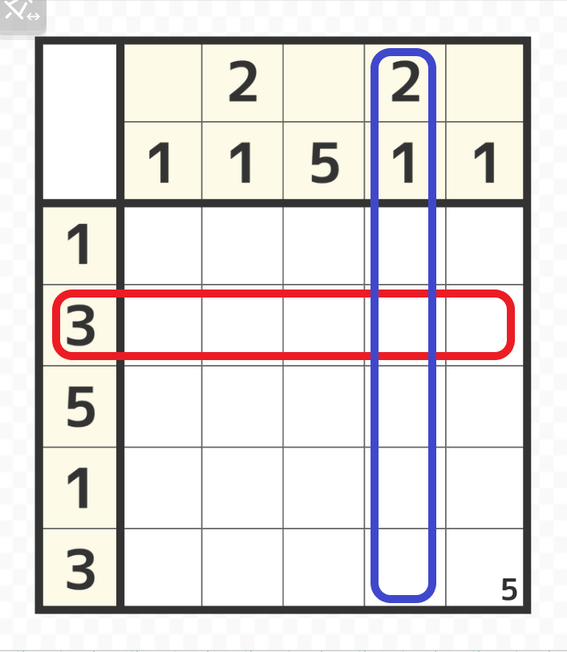
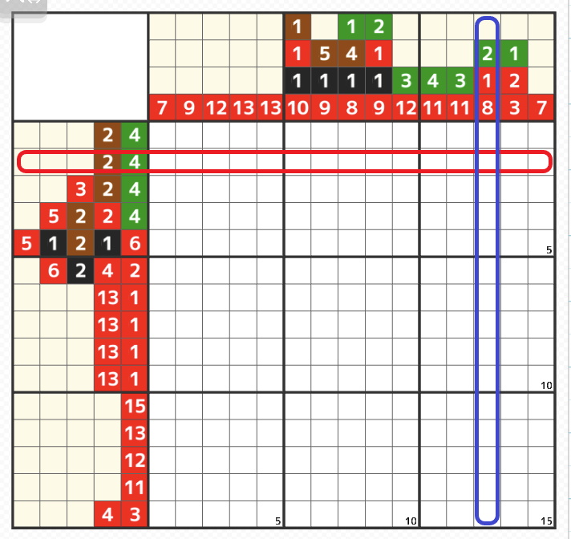

左側と上側の数字は絵を描くためのヒント

- 左側の上から2行目（赤線部分）のヒントは横に5マス塗ることができる範囲の中に3マスが連なって塗られるということになる。
- 上側の左から4列目（青線部分）のヒントは縦に5マス塗ることができる範囲の中に2マスが連なり空白が1マス以上空いてから下に1マスが塗られるということになる。

- ただしカラー版は同じ色のヒントとヒントの間に空白は1マス以上入るが違う色の間には空白が入る場合もあれば入らない場合もある。
上図の様に2行目（赤線部分）のヒントは横に15マス塗ることができる範囲の中に左から茶色の連なった2マスがどこかに入りその右に空白が入る場合もあれば入らない場合もあり、更に右に緑が4マス連なるというヒントになる。 - 13列目（青線部分）のヒントは縦に15マス塗ることができる範囲の中に上から緑の連なった2マスがどこかに入りその下に空白が入る場合もあれば入らない場合もあり、その下に赤が1マス塗られて更に下に空白が必ず1マス以上空いてからその下に赤が8マス連なるというヒントになる。